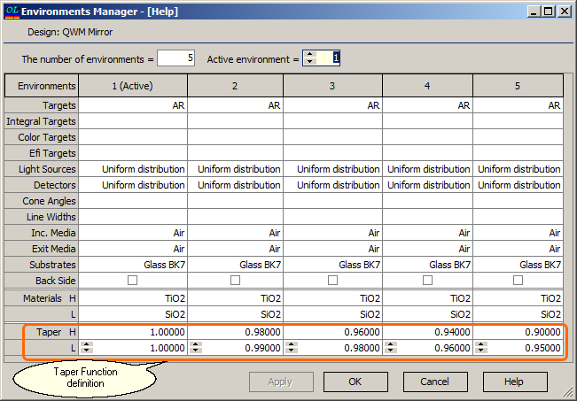

Taper Function
Taper Function
Navigation: OptiLayer Menu Commands > Data Menu > Environment Manager >
Taper Function
` <envmanfrm.html>`__ ` <envmanfrm.html>`__ ` <multi_coating_manager.html>`__
One specific and very useful application of the concept of Environments is the so-called Taper Function. In situations where the deposition of a coating is performed on a curved surface, layer thicknesses are no longer uniform. They depend on the coordinate of the reference point on the curved substrate surface. In many cases, it is necessary to design a coating with lower sensitivity to this factor. Another possible situation is connected with mass production of samples in a chamber where the deposition conditions at different positions are different. Since the Environment manager allows the definition of up to 32 different environments, it is possible to specify detailed Taper Function dependencies. For example, below we have defined 5 environments with different taper coefficients for H and L-index materials.

Taper coefficients specified for each environment are ratios of the thicknesses at that position to the thicknesses of the theoretical design. These ratios could vary for each layer material. If the Taper coefficients at a particular position (Environment 1 in the example above) are equal to 1.0, it indicates that the thicknesses are equivalent to the thicknesses of the theoretical design.